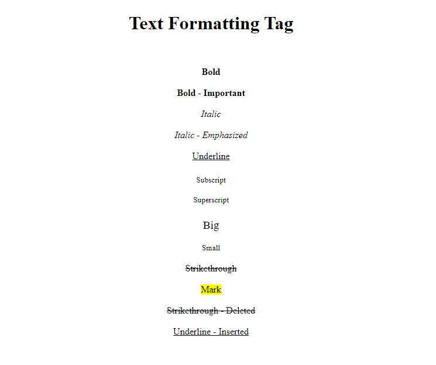
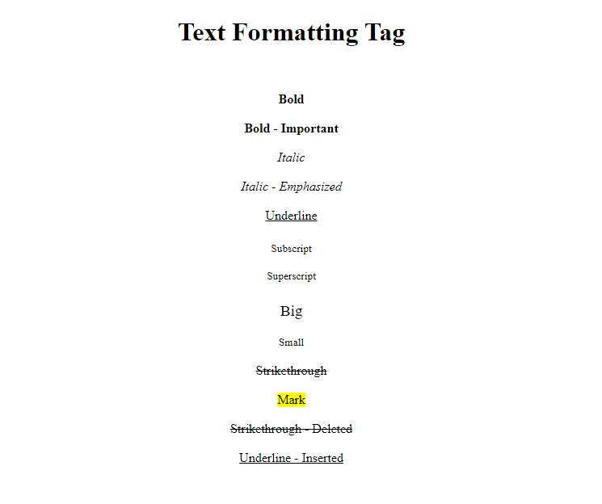

Output
Text Formatting Tag


Click the button Copy Source Code to copy the HTML code and paste in sublime text editor and save as textformatting.html and open in browser to render the output.
<b>Bold</b>
<strong>Bold - Important</strong>
<i>Italic</i><br><br>
<em>Italic - Emphasized</em>
<u>Underline</u>
<sub>Subscript</sub>
<sup>Superscript</sup>
<big>Big</big>
<small>Small</small>
<strike>Strikethrough</strike>
<mark>Mark</mark>
<del>Strikethrough - Deleted</del>
<ins>Underline - Inserted</ins>
<!DOCTYPE html>
<html>
<head>
<title>Text Formatting Tag</title>
</head>
<body>
<h1 align="center">Text Formatting Tag</h1><br>
<p align="center">
<b>Bold</b><br><br>
<strong>Bold - Important</strong><br><br>
<i>Italic</i><br><br>
<em>Italic - Emphasized</em><br><br>
<u>Underline</u><br><br>
<sub>Subscript</sub><br><br>
<sup>Superscript</sup><br><br>
<big>Big</big><br><br>
<small>Small</small><br><br>
<strike>Strikethrough</strike><br><br>
<mark>Mark</mark><br><br>
<del>Strikethrough - Deleted</del><br><br>
<ins>Underline - Inserted</ins><br>
</p>
</body>
</html>
Text Formatting Tag
